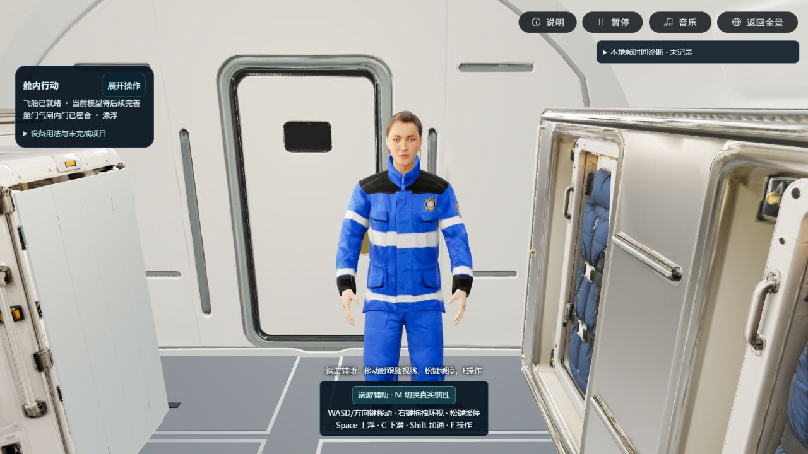
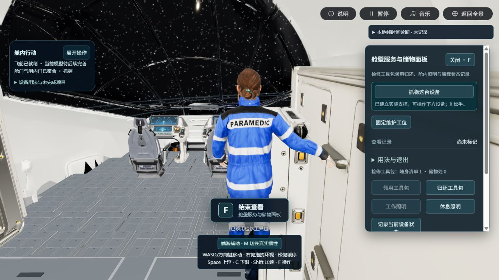
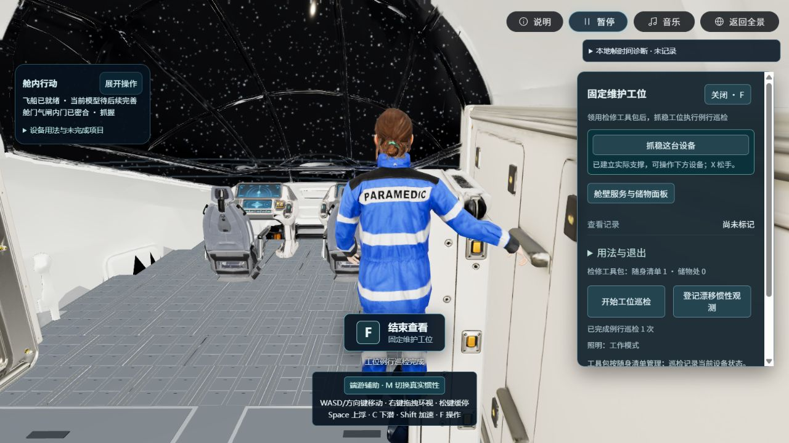
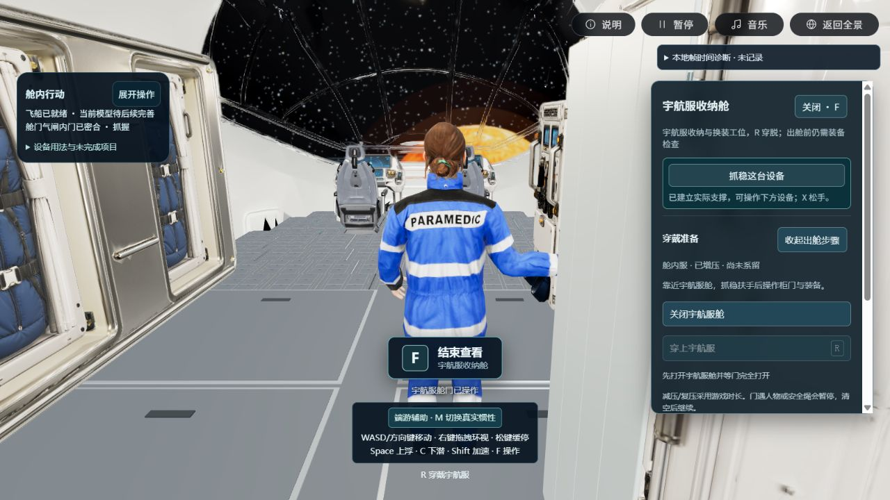
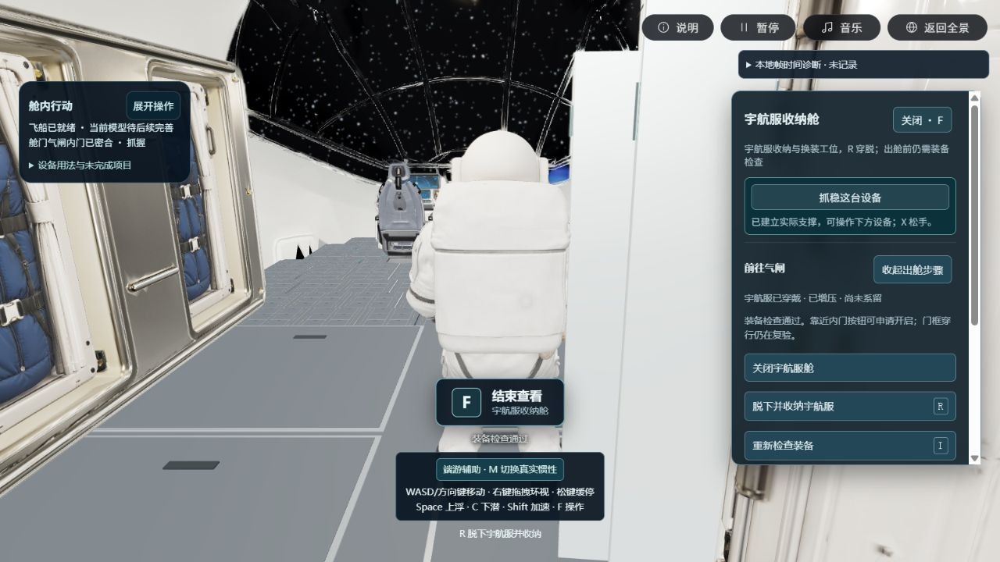

实际桌面 Web · 2026-10-29 · 制作候选，整体仍待用户验收减少记键，让移动与操作连起来
默认辅助模式改为常见桌面游戏的视向移动：人物在移动时平滑转向镜头所看的方向；松键缓停。四肢增加低幅、渐入渐出的移动响应，保留角色的来源网格、原生骨段、比例与权重。它是明确的游戏辅助；真实惯性实验仍使用独立严格模式。
进入本机候选游戏本轮记录8份保护原件校验
| 日常操作 | 默认辅助模式 |
|---|
| 移动 / 看向 | WASD 或方向键移动；右键拖拽环视，左键拖拽保留；移动时身体平滑跟随视线。 |
| 升降 / 加速 / 停下 | Space 上浮，C 下潜，Shift 加速；松键缓停，B 主动制动。 |
| 设备 | 靠近后 F 查看/进入/退出；面板内点“抓稳这台设备”，形成真实手部接触后操作；Esc 取消动作。 |
| 可选键 | Q/E 单独转身，X 抓握/松手，R 穿脱，V 挥手，G/H 手指动作。 |
| 严格惯性 | M 切换；扶稳后方向键推离，或WASD选方向再Space推离；松键保持惯性。漂移观测自动切严格并锁定辅助。 |
真实游戏画面

生产游戏中的原角色正面。此图来自操控/设备验证构建，随后只补服舱查看识别；没有生成新人物，也没有改变来源几何。

连续移动到设备后，按钮伸手抓稳实际来源表面，工具包从储物处转入随身清单；F可结束查看并保留支撑。角色伸手与设备接触同时可见。

领用工具后启动工位巡检。暂停时进度保持0.08759999999997672秒，暂停按W没有推进；恢复后实际显示完成1次，船载日志2条。
服舱入口补齐
实景连续到达服舱时曾出现“R穿戴”却没有F入口。只读来源射线确认：柜门比柜体识别目标提前约33毫米，被当作遮挡。现仅将本服舱所属门面识别为可查看正面；其他结构仍阻挡识别，身体和手的真实碰撞保持。

最终生产包从初始扶手正常移动到低位抓点后，F打开集中面板，点击抓稳，再实际开启柜门；未设置人物坐标。穿脱须等柜门完全展开。

同一正常到达流程中，R穿戴完成，面板内完成装备检查，F结束查看；随后已正常R脱服回收，并确认柜门完全关闭。实际白色宇航服与柜门细节保持来源现状，视觉仍待验收。
来源射线诊断 · 保留修复前缺失入口现场 · 操控、设备及暂停连续记录 · 服舱补修后的独立连续记录
仍未完成的部分
气闸门框实际穿行和完整EVA出返舱仍未通过；毛细流、植物与舱外材料实验装置尚未完成。动作整体视觉、全部设备无指导可用性与长时性能仍待验收。界面清单、工程测试、静态截图或已实现的气闸按钮，都不代表这些项目完成。
本轮没有新增/修改三维模型几何、下载外部资产、上传、安装依赖、提交、推送或部署。已有穿戴为来源服装切换及程序动作，不是逐片衣物/软体穿戴模拟；新随动也不是专业动作捕捉素材。
验证范围
最终代码350项回归通过；类型检查通过，生产构建通过25.64秒，保留已有大包提示。新增检查包含松键停稳、视向跟随、升降/加速、真实源面撞停退出、失焦清键、抓稳取消/过期面板、关闭柜门识别及原角色逐帧手掌/骨段检查。8份保护原件哈希与字节保持。
生产控制台没有error，保留1条驱动着色器数值精度warning；原始记录可核对，本轮没有改写着色器以隐藏该警告。
浏览器实测移动、转身后再移动、Space/C升降、Shift移动、左拖整圈观察、设备领用、巡检暂停恢复和服舱操作。右键拖拽已接入相同手势通路并有手势回归，本轮未单独录制右键拖拽实景。连续路线分版本分别保留，不能拼成一条无中断全流程。
键鼠习惯参考 Epic第三人称模板 的WASD与鼠标观察组合，再按微重力场景调整升降和辅助；没有声称达到成熟端游的全部制作质量。